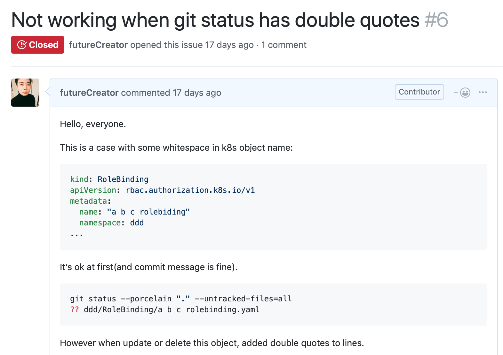

오픈 소스 컨트리뷰션을 위한 GitHub Fork & Pull Request
GitHub 에서 오픈 소스를 사용하다보면 발견한 버그를 직접 수정하거나, 새로운 기능을 추가하고 싶을 때가 있습니다. 하지만 어디서부터 어떻게 시작해야할 지 막막하기도 합니다. 이번 포스트에서는 오픈 소스에 컨트리뷰션(기여)하는 절차를 간단히 알아보겠습니다.
1. New Issue
먼저, 사용하다가 발견한 버그나 기능에 대한 의견을 이슈(Issue)로 만들어 제기합니다. 내가 바로 처리할 수 있는 것이라도 먼저 이슈를 제기해서 다른 사람들의 의견과 동의를 구하는 것이 좋습니다. 누군가는 해당 이슈에 대해 다르게 생각할 수도 있고, 내 아이디어를 발전시켜 줄 수도 있기 때문입니다.


이렇게 올라간 이슈는 해당 주제에 대해 토론과 대화가 이뤄집니다. 이슈에는 새롭게 번호가 붙는데 # 을 이용해서 특정 이슈를 검색하거나 언급할 수 있습니다(e.g. 111번 이슈라면 #111). 그리고 이슈를 올리기 전에, 기존에 올라간 이슈 중에 비슷한 이슈가 있는지 미리 검색해보는 것이 좋습니다.
수정 또는 새로운 기능에 대한 동의가 이뤄지면 누군가가 개발을 해야하는데요, 이번엔 직접 개발해볼까요?
2. Fork & Clone 하기
먼저 기여하고 싶은 저장소에서 Fork 버튼을 눌러 포크를 진행합니다.

그러면 내 계정으로 저장소가 복사됩니다.

이렇게 포크된 저장소를 클론(Clone)해서 내려받습니다.
1 | git clone https://github.com/futureCreator/kube-backup.git |
3. Remote Repository 추가하기
현재 원격 저장소(origin)은 포크된 우리의 저장소입니다. 이와 별개로 원래 저장소에서는 따로 개발이 진행될 것이기 때문에 최신 버전과 싱크를 맞추는 작업이 필요합니다. 그래서 원래 저장소도 원격 저장소(upstream)로 추가합니다.
1 | git remote add upstream https://github.com/kuberhost/kube-backup.git |
추가된 저장소는 다음과 같이 확인할 수 있습니다.
1 | git remote -v |
4. Branch 생성하고 작업하기
이제 로컬에서 마음껏 작업하면 됩니다. 간단한 작업이라면 그냥 master 브랜치에서 작업해도 됩니다. 하지만 복잡한 작업은 새로운 브랜치(e.g. newfeature)를 생성해서 작업하는 것이 좋겠죠.
1 | git checkout master |
작업할 때 커밋 메시지를 고민하는 경우가 많은데, 로컬에서 개발할 때는 커밋 메시지를 크게 고민하지 않아도 됩니다. 푸시(Push)하지 않는 한 해당 메시지는 올라가지 않으니까요. 푸시 하기 전에 커밋 내역을 정리할 수 있으므로 로컬에서는 마음껏 커밋해도 괜찮습니다.
1 | git commit add . |
5. 작업 정리하기
작업이 완료된 후 푸시하기 전에 원래 저장소에 수정된 작업이 있으면 포크된 저장소와 싱크를 맞춰야 합니다. upstream 브랜치와 master 를 머지(Merge)합니다.
1 | git fetch upstream |
이제 rebase -i 명령어를 이용해 커밋 내역을 정리하고 newfeature 와 master 브랜치를 합칩니다. -i 옵션은 인터랙티브 옵션으로 커밋 이력을 보여주고, 사용자가 특정 커밋을 선택하거나 합칠 수 있는 명령어입니다.
1 | git checkout newfeature |
6. Push 하기
이제 모든 수정 사항이 반영된 master 브랜치를 포크된 원격 저장소(origin)으로 푸시합니다.
1 | git push origin master |
7. Pull Request 만들기
GitHub 웹 페이지에서 포크한 저장소를 찾아가면 내가 푸시한 브랜치 기반으로 Create Pull Request 버튼이 생긴 걸 볼 수 있습니다. 또는 Compare 버튼을 눌러 브랜치를 비교하고, 원하는 브랜치로 Pull Request 를 생성할 수 있습니다. 인터페이스가 직관적이어서 쉽게 비교할 수 있습니다.

Pull Request 생성 시 본문에 수정한 내용을 간단히 적을 수 있는데요, 특정 문법으로 해당 이슈를 바로 닫을(Close) 수 있습니다.
- close
- closes
- closed
- fix
- fixes
- fixed
- resolve
- resolves
- resolved
e.g. 111번 이슈에 대한 PR: close #111, fixes #111, etc.
그럼 Pull Request 가 승인될 때 해당 이슈가 자동으로 닫힙니다.
8. Merged!

생성된 Pull Request 가 검토 과정을 거쳐 승인이 나면 수정한 소스는 원본 소스로 머지됩니다.

해당 이슈는 자동으로 닫혔습니다.
물론 승인이 나지 않을 수도 있습니다. 방향이 다르거나 혹은 더 수정이 필요한 것일 수도 있습니다.
정리
이번 포스트에서는 오픈 소스 기여 절차에 대해 알아봤습니다. 컨트리뷰션이라고 하면 거창해보이지만 꼭 대단한 기여만 있는 것은 아닙니다. 작은 버그를 발견하고 이슈를 제기하는 것도 일종의 기여이고, 해당 오픈 소스가 발전할 수 있도록 의견을 제시하는 것도 일종의 기여니까요. 직접 소스를 커밋해서 이슈를 해결하려면 그 전에 커뮤니티의 의견을 듣고 동의를 구하는 과정이 중요한 것 같습니다. 그렇게 여러 사람이 힘을 모아서 소프트웨어를 발전시켜 나가는 것이 진정한 오픈 소스의 힘이 아닐까 합니다.
참고
Related Posts
- [computer-system-time]
- [metasyntactic-variables-foo-bar]
- [about-clean-code]
- [software-versioning]
오픈 소스 컨트리뷰션을 위한 GitHub Fork & Pull Request
install_url to use ShareThis. Please set it in _config.yml.